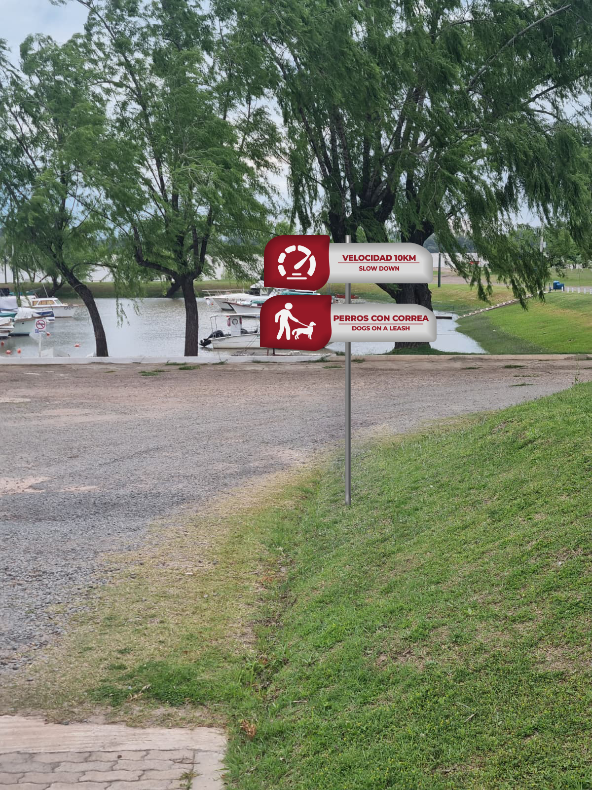
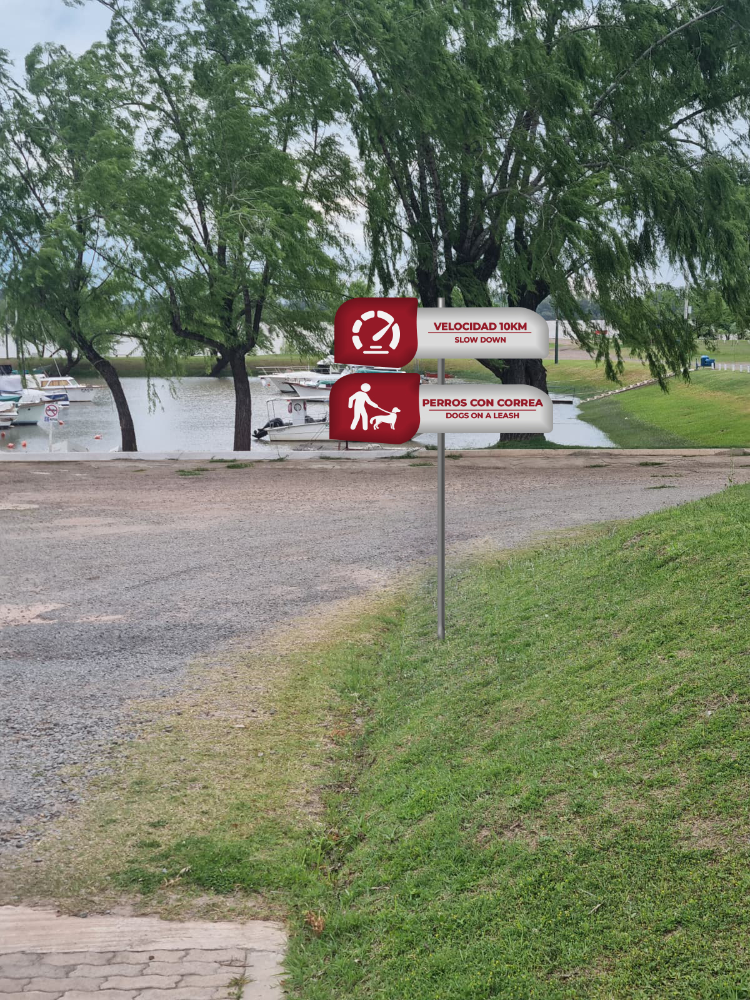

Sistema de Señalética
Aplicaciones espaciales, orientación urbana y consistencia visual.

Análisis Inicial
El Yacht Club Paysandú no contaba con una identidad visual definida y la señalética era casi inexistente. Los carteles que había no seguían ningún criterio, eran pocos y no ayudaban a orientarse dentro del predio. El club tiene muchas áreas (sociales, deportivas, administrativas y de servicios) y era necesario ordenar la información para que socios y visitantes pudieran ubicarse fácilmente.


Definición del Problema
La tarea consistía en analizar el lugar, entender sus recorridos y diseñar un sistema de señalética unificado. Se debían definir los puntos clave, organizar la información y crear señales claras, modernas y funcionales que representaran la identidad del club. Además, era importante plantear una propuesta visual que pudiera aplicarse tanto en el exterior como en el interior.

Desarrollo del Sistema
Se analizó todo el predio mediante relevamiento, encuestas y zonificación. Con esa información se definió un sistema visual claro, ordenado y fácil de aplicar. Se diseñaron íconos, colores y jerarquías tipográficas, agrupando las señales según su función: nomencladoras, direccionales, reguladoras e informativas.

Resultado Final
El proyecto dio como resultado un sistema de señalética ordenado, funcional y visualmente consistente. Las señales permiten recorrer el espacio sin confusiones y ayudan a identificar cada área del club de forma clara. La propuesta mejora la experiencia de los usuarios y deja una base sólida para una comunicación visual unificada dentro del Yacht Club Paysandú.


 
